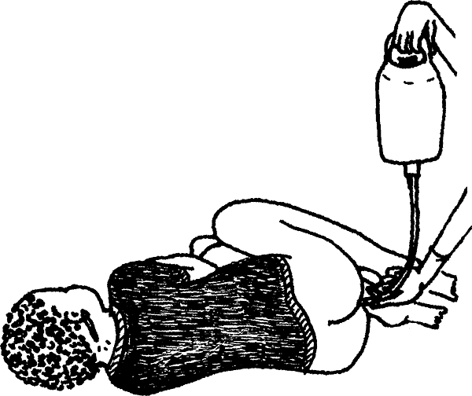

{% set pagetitle = "How to give rectal fluids" %}
{% set seq_length = 6 %}
{% set seq_position = 6 %}
{% set seq_llink = "How_to_give_rectal_fluids5.html" %} ## set rlink equal to next page href
{% set seq_rlink = "javascript:;" %} ## set llink equal to previous page href
{% extends "templates.jinja/base.page-with-sequence.html" %}
{% block title %} Hesperian - Pregnancy & Birth{% endblock %}
{% block id %}How_to_give_rectal_fluids6{% endblock %}
{% block content %}

- Transport the woman for medical help right away. If the woman is still in shock, you can give more rectal fluids one hour later. If she is not in shock, try to give sips of rehydration drink as you transport her.
{% endblock %}
{% block footer %}
{% endblock %}